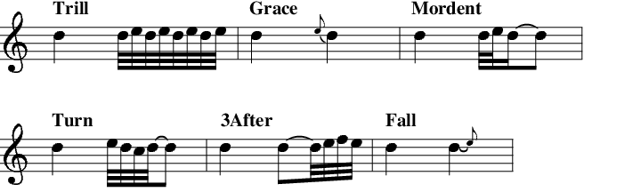

Ornament
Individual notes in various tracks can be embellished or ornamented by
using standard musical ``tricks'' like grace notes, mordents, etc.
This is specified with the ORNAMENT command. This command is
valid in CHORD, BASS, WALK, ARPEGGIO and
SCALE tracks. This command has a number of valid options, all
set in the OPTION=VALUE format. Following are the recognized options:
- Type
- This is the type of embellishment to use. Valid settings
are MORDENT, TURN, TRILL, GRACE and
3AFTER. The effects are best illustrated in standard
notation:

- Chromatic
- By default, when selecting the additional notes to
use
MMA uses the scale list for the current chord. This ensures
that the added notes blend with the rest of the accompaniment. The
exception occurs when the initial note is part of a modified
pattern;16.1 in this case a chromatic note is
used.
The CHROMATIC option forces the use of chromatic notes. It is
set with CHROMATIC=ON. You can also use TRUE to
enable; OFF or FALSE to disable.
- Place
- Valid settings are ABOVE, BELOW,
RANDOM. The examples shown above are all with the default
option ABOVE in effect. Using the PLACE=BELOW setting
moves the embellishments down below the note. The final option,
PLACE=RANDOM, places the ornament randomly.
- Duration
- The time-slice given to the main note and the
embellishment can be set with this option. By default the
embellishment is given 20% of the duration (the remaining 80%
going to the note). This is pretty straightforward to use, except
that in the TRILL setting this sets the number of pairs of
notes to use (for example, in TYPE=TRILL DURATION=25 you will
get each note divided into 4 pairs). The ARTICULATE setting
will effect both the main note and the embellishments. When using
the 3AFTER setting a duration of 75 will set all 4 notes to
the same duration.
- Pad
- This option adds (or subtracts) duration to both the
ornamented and main portion of the note(s). Optionally, you can set
2 values (a comma separated pair, eg. PAD=10,20) which will
set different values for the main note and the ornamentation (in
that order). The value(s) are set as percentage value(s). The
default is to add 10% to each note. The placement (the start time)
of both notes is determined by the note duration specified in the
pattern; this option effects the ``overlay'' time. Judicious use of
this option will give the notes/ornamentation a more legato or
staccato feel. Both values must be in the range of -100 to 100.
- Volume
- The relative volume (actually MIDI velocity) of the
embellishments defaults to 75% of the main note. You can make added
notes louder (VOLUME=150) or softer (VOLUME=50).
- Beats
- Set the offsets on which the embellishments will be
applied. Beats are specified in the same manner as pattern offsets
(here). The beats (offsets)
are a comma separated list:
|
Scale Ornament Beats=1,3.25,4
|
You can disable this setting (the default) with the special value
``All''.
- Bars
- Limit the ornamentation to specified bars in the
sequence. This is a comma separated list. For example, if you have a
4 bar sequence you could limit the ornamentation to the first and
third bars in the sequence with:
|
Arpeggio Ornament Type=Moderent Bars=1,3
|
To make life more interesting (and confusing) this can be combined
with the BEATS option, above. You can disable this setting
(the default) with the special value ``All''.
- Rskip
- Skip a random number of ornamented notes. The setting
must be in the 0 to 100 range (with 0 turning the feature off and
100 skipping every event). RSKIP is only applied to events
permitted by the BEATS and BARS options. Also, the
track setting for RSKIP is further applied to generated
notes.
- Offset
- Add in a further offset for the ornamented notes. The
main note is not effected. This can be used to insert additional
space between the ornament and actual note:
|
Walk Ornament Type=Grace Chromatic=On Offset=-20
|
The argument is the additional number of MIDI ticks to shift the
ornamentation. It must be in the range -194 to 194 (equivalent to a
quarter note).
For reference, here is a setting line which duplicates the defaults:
|
Bass Ornament Type=NONE Chromatic=OFF Duration=20.0 Pad=10.0,10.0
Offset=0 Volume=75.0 Place=ABOVE Beats=ALL Rskip=0 Bars=ALL
|
To disable all ornamantations you can use an empty command or the
single keywords ``None'' or ``Off'':
Scale Ornament
Scale Ornament Off
|
There are a number of examples in the egs/ornament directory.
Some points to note:
Footnotes
- ... pattern;16.1
- This can occur in BASS patterns which have
a or modifier.
- ... etc.16.2
- This is a deliberate departure from the normal
MMA syntax. It's quite unlikely that you would want more that one
ornamentation setting in a sequence, but quite likely that you'd
only want a setting to be applied to a certain bar in the
sequence.
Bob van der Poel
2013-12-21